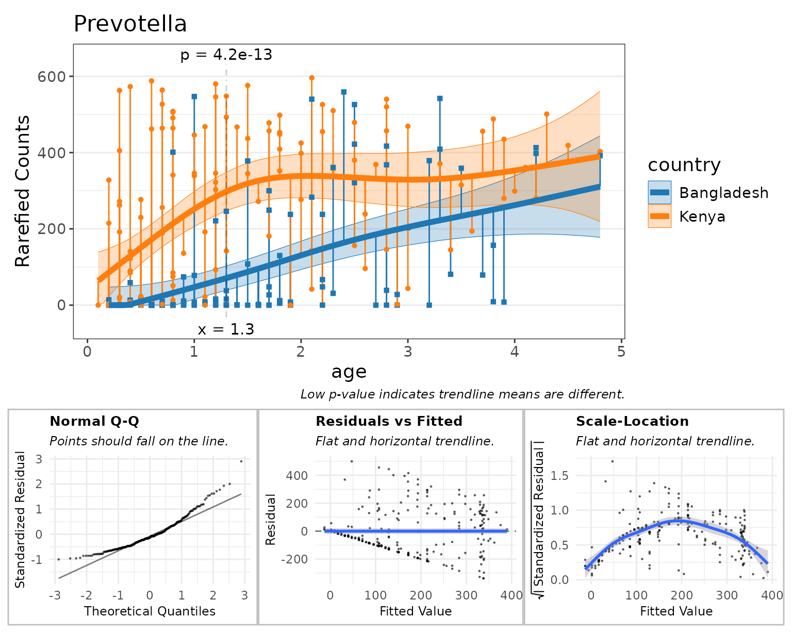
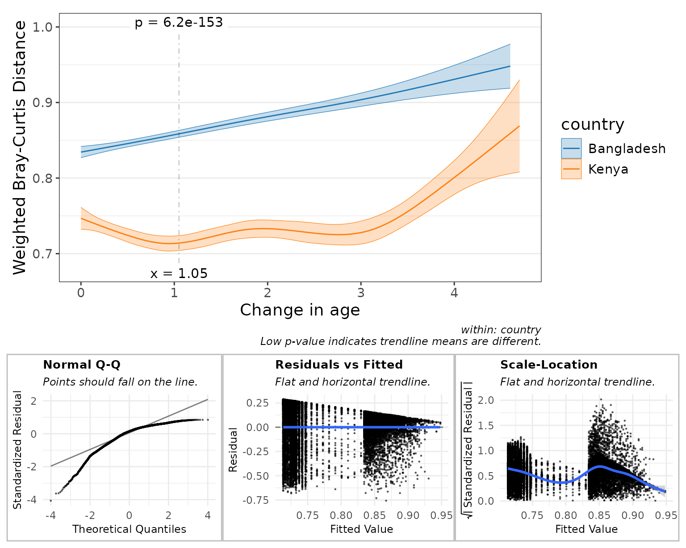

Introduction
Regression functions are provided for examining the association between two continuous variables.
Examples of continuous variables are alpha diversity metrics, taxa abundances, and sample metadata such as age or BMI. These all have a numeric range in which a data point can take on any value in that range.
Children Heights
To start with a simple example, consider the children
dataset from the R package npregfast. It records age, sex,
and height for 2500 children aged 5 through 19 years.
head(npregfast::children)
#> sex height age
#> 1 male 150.77 13.25
#> 2 female 170.59 14.17
#> 3 female 167.31 15.17
#> 4 female 165.72 16.58
#> 5 female 171.67 15.17
#> 6 female 143.74 12.67Height vs Age
First, let’s plot ‘age’ vs ‘height’, and overlay a best-fit linear trendline.
With this plot, we’re testing the hypothesis “as you get older, your height changes”.
stats_corrplot(
df = npregfast::children, # dataset
x = 'age', # x-axis variable
y = 'height', # y-axis variable
layers = 'tp', # show trendline and points
test = 'emtrends', # run stats on the slope
fit = 'lm', # straight trendline
pt.size = 0.2, # make points smaller
pt.alpha = 0.2 ) # and semi-transparentAs you’d expect, the trendline’s slope is positive (p-value = 0). Therefore it’s safe to say that height changes with age.
Grouped by Sex
Is the rate of growth influenced by sex? We can add
stat.by = "sex" to draw separate lines for males and
females.
stats_corrplot(
df = npregfast::children, # dataset
x = 'age', # x-axis variable
y = 'height', # y-axis variable
stat.by = 'sex', # statistical groups <====
fit = 'lm', # straight trendline
layers = 'tp', # show trendline and points
test = 'emtrends', # run stats on the slopes
pt.size = 0.2 ) # make points smaller
Here, a p-value of 3.9e-51 indicates that males and females do have different growth rates.
If you look at the captions of the last two plots, you’ll notice that the p-value test automatically changes.
- When
stat.by = NULL,test = "emtrends"will test if the slope is zero. - When
stat.byis notNULL,test = "emtrends"will test if the trendline slopes are equal.
Smoothed Fit
Linear trendlines probably aren’t the best way to model growth rates.
Setting fit = "gam" will use a generalized additive model
which fits several sub-ranges of age with independent splines.
stats_corrplot(
df = npregfast::children, # dataset
x = 'age', # x-axis variable
y = 'height', # y-axis variable
stat.by = 'sex', # statistical groups
fit = 'gam', # smoothed trendline <====
layers = 'tp', # show trendline and points
test = 'emtrends', # run stats on the slopes
pt.size = 0.2 ) # make points smaller
This gives us a much better idea of the moving average over time.
We still have test = "emtrends", so the p-value is
reported where the difference in slope is most significant - in this
case, at age = 5.9 years.
Difference in Means
Let’s set test = "emmeans" instead, and show the 95%
confidence interval instead of all the data points.
stats_corrplot(
df = npregfast::children, # dataset
x = 'age', # x-axis variable
y = 'height', # y-axis variable
stat.by = 'sex', # statistical groups
fit = 'gam', # smoothed trendline
layers = 'tc', # show trendline with conf. int.
test = 'emmeans' ) # run stats on the means <====Differences in height are most significant at age = 16.8 (where p-value = 8.9e-40).
Statistics Table
The complete statistical output is attached to the returned plot as
$stats.
You can also directly generate this table with the
stats_table() function.
st <- stats_table(
df = npregfast::children, # dataset
regr = 'age', # x-axis variable
resp = 'height', # y-axis variable
stat.by = 'sex', # statistical groups
fit = 'gam', # generalized additive model
test = 'emmeans' ) # run stats on the means
# Print the table transposed, since it's one row by 14 columns.
t(st)
#> [,1]
#> age "16.8"
#> sex "female - male"
#> .mean.diff "-7.730025"
#> .h1 "!= 0"
#> .p.val "8.875599e-40"
#> .adj.p "8.875599e-40"
#> .effect.size "-1.205401"
#> .se "0.5753545"
#> .n "2500"
#> .df "2485"
#> .t.ratio "-13.43524"
#> .adj.r "0.8313946"
#> .aic "16403.78"
#> .bic "16497.75"
#> .loglik "-8185.756"Depending on the arguments given, the estimate term will be one of:
| Field | Description | test |
stat.by |
|---|---|---|---|
| .mean | Estimated marginal mean. | emmeans::emmeans() |
NULL |
| .mean.diff | Difference in means. | emmeans::emmeans() |
not NULL
|
| .slope | Trendline slope. | emmeans::emtrends() |
NULL |
| .slope.diff | Difference in slopes. | emmeans::emtrends() |
not NULL
|
Other fields in this table include:
| Field | Description |
|---|---|
| .h1 | Alternate hypothesis. |
| .p.val | Probability that null hypothesis is correct. |
| .adj.p |
.p.val after adjusting for multiple comparisons. |
| .effect.size | Effect size. See emmeans::eff_size(). |
| .lower | Confidence interval lower bound. |
| .upper | Confidence interval upper bound. |
| .se | Standard error. |
| .n | Number of samples. |
| .df | Degrees of freedom. |
| .t.ratio |
(.mean, .mean.diff, .slope, or .slope.diff) /
.se
|
| .r.sqr | Percent of variation explained by the model. |
| .adj.r |
.r.sqr, taking degrees of freedom into account. |
| .aic | Akaike Information Criterion (predictive models). |
| .bic | Bayesian Information Criterion (descriptive models). |
| .loglik | Log-likelihood goodness-of-fit score. |
| .fit.p | P-value for observing this fit by chance. |
Marginal Means
Estimated marginal means (EMMs; also known as least-squares means)
are means extracted from a statistical model. This allows EMMs to take
into account more complex associations and produce confidence intervals
in addition to estimates of the mean. This approach is employed by
rbiom’s 'emmeans' and 'emtrends' tests, using
the emmeans::emmeans package.
Additional information on EMMs is available at:
Goodness of Fit
The statistics table has several fields for assessing how well the model fits the data.
-
.r.sqr- Coefficient of Determination (R2); range: 0-1, lower is better. Percent of variation explained by the model. -
.adj.r- R2, taking degrees of freedom into account. -
.aic- Akaike Information Criterion; lower is better. Preferred when using model for prediction. -
.bic- Bayesian Information Criterion; lower is better. Preferred when using model for interpretation. -
.loglik- Log-Likelihood (negative values); higher values (closer to zero) are better. -
.fit.p- P-value for observing this fit by chance; range: 0-1, lower is better.
Not all of these values can be computed for every model.
As an example, lets pull the AIC value from the statistics table generated in the last section.
st$.aic
#> [1] 16403.78These values can be used to decide which fit argument to
use ("lm", "log", or "gam").
plyr::ldply(c(lm="lm", log="log", gam="gam"), .id = "fit", function (fit)
stats_table(npregfast::children, "age", "height", "sex", fit = fit) ) %>%
dplyr::select(fit, .r.sqr:.fit.p)
#> fit .r.sqr .adj.r .aic .bic .loglik .fit.p
#> 1 lm 0.7896923 0.7894395 16947.72 16976.84 -8468.858 0
#> 2 log 0.8031003 0.8028636 16783.02 16812.14 -8386.512 0
#> 3 gam NA 0.8313946 16403.78 16497.75 -8185.756 NABased on the above table, fit = "gam" has the lowest
AIC, lowest BIC, and highest Log-Likelihood, and is therefore the best
model of the three to use for this set of data and variables.
Alternative Hypothesis
The three columns .mean.diff, .h1, and
.p.val together show the hypothesis and its outcome. Above,
we’re asking if .mean.diff is non-zero. Since
.p.val is less than 0.05 we can say that it is.
dplyr::select(st, .mean.diff:.p.val)
#> # Model: gam(height ~ s(age, by = sex, bs = "cs") + sex, method = "REML")
#> # A tibble: 1 × 3
#> .mean.diff .h1 .p.val
#> <dbl> <fct> <dbl>
#> 1 -7.73 != 0 8.88e-40For a more complete review of alternative hypotheses, see the rbiom statistics article.
Checking Residuals
One of the best ways to assess the quality of your model is to interrogate the residuals. A “residual” is the vertical distance from a data point to the trendline; the difference between observed and predicted (fitted) values.
High quality models will have randomly distributed residuals. Three
common plots for visualizing residuals are normal Q-Q plots, residual vs
fitted value plots, and scale-location plots. You can add these plots to
any rbiom corrplot by setting check = TRUE.
stats_corrplot(
df = npregfast::children, # dataset
x = 'age', # x-axis variable
y = 'height', # y-axis variable
stat.by = 'sex', # statistical groups
fit = 'gam', # smoothed trendline
layers = 'tc', # show trendline with conf. int.
test = 'emmeans', # run stats on the means
check = TRUE ) # display diagnostic plots <====
The subtitle for each plot tells you what a high quality model will look like. For example, the “Normal Q-Q” plot says that “Points should fall on the line.” In this case they do, so that particular check indicates high-quality.
These diagnostic plots are largely subjective/qualitative. That is, you must use your best judgement to decide if the residuals appear to pass or fail the checks.
A complete explanation of these diagnostic plots is beyond the scope of this article. Readers are encouraged to explore the topic further at sites such as:
GEMS Dataset
Going forward we’ll use the gems dataset included with
rbiom. GEMS is a case-control study comprising 1,006 stool samples from
young children with or without diarrhea in four low-income countries.
The original Nature article by Eric J. de Muinck and Pal Trosvik for
this data set is available online for free at Individuality
and Convergence of the Infant Gut Microbiota During the First Year of
Life.
gems
#>
#> ══ Global Enteric Multicenter Study ════════════════════════
#>
#> Stool samples collected from 1006 participants under the
#> age of 5 from Bangladesh, Gambia, Kenya, and Mali. Includes
#> 492 healthy controls and 514 moderate-to-severe diarrhea
#> (MSD) cases. Original study by Pop et al, 2014
#> (<https://doi.org/10.1186/gb-2014-15-6-r76>); dataset
#> retrieved from MicrobiomeDB
#> (<https://doi.org/10.1093/nar/gkx1027>).
#>
#> 1006 Samples: SRS608640, SRS608279, SRS607780, ...
#> 767 OTUs: OTU001, OTU002, OTU003, ..., and OTU767
#> 8 Ranks: .otu, Kingdom, Phylum, ..., and Species
#> 4 Fields: .sample, diarrhea, age, and country
#> Tree: <absent>
#>
#> ── 116 - 11k reads/sample ──────────────────── 2021-03-15 ──
#>
glimpse(gems)
#> Rows: 1,006
#> Columns: 4
#> $ .sample <chr> "SRS608640", "SRS608279", "SRS607780", "SRS607987", "SRS60842…
#> $ diarrhea <fct> Control, Case, Case, Case, Control, Case, Case, Control, Cont…
#> $ age <dbl> 0.2, 1.4, 0.8, 1.8, 0.6, 4.0, 0.5, 2.2, 0.4, 1.4, 2.1, 2.0, 0…
#> $ country <fct> Bangladesh, Kenya, Gambia, Gambia, Kenya, Kenya, Mali, Gambia…The gems metadata includes two categorical fields and
one continuous field:
| Field | Type | Values |
|---|---|---|
| diarrhea | categorical | Case or Control |
| age | continuous | 0 - 4.8 (years old) |
| country | categorical | Bangladesh, Gambia, Kenya, or Mali |
Alpha Diversity
Since we’re working with an rbiom object - hbk - we can
use the convenience function adiv_corrplot(), which
combines the steps of generating a table of alpha diversity values
(adiv_table()) and generating a correlation plot
(stats_corrplot()).
adiv_corrplot(
biom = hbk, # healthy controls from Bangladesh and Kenya
x = "age", # x-axis variable
stat.by = "country", # statistical groups
fit = "gam", # smoothed trendline
check = TRUE ) # display diagnostic plots
Here, the diagnostic plots look pretty good, so we can confidently say that children have different Shannon diversity index values, depending on whether they live in Bangladesh vs Kenya, and that this difference is most significant at around 1.35 years old.
Taxa Abundance
Similar to adiv_corrplot(), taxa_corrplot()
combines taxa_table() and stats_corrplot()
into a single streamlined function.
We’ll set layers = "tcrp" to show the residuals on this
main plot. This will help in explaining an artifact on the “Residuals vs
Fitted” diagnostic plot.
taxa_corrplot(
biom = hbk, # healthy controls from Bangladesh and Kenya
layers = "tcrp", # show residuals on the main plot
x = "age", # x-axis variable
taxa = 1, # select the most abundant taxa
rank = "Genus", # at the genus level
stat.by = "country", # statistical groups
fit = "gam", # smoothed trendline
t.size = 2, # make the trendline thicker
check = TRUE ) # display diagnostic plots
Above, all the orange and blue points falling on y=0 indicate there are zero Prevotella reads for that sample. This can confound taxa abundance analyses, as indicated by the diagnostic plots.
- Normal Q-Q: This curved shape indicates residuals are more often below the trendline.
- Residuals vs Fitted: The points forming a straight black diagonal ‘line’ are the result of a overabundance of a single value in the data (zero).
- Scale-Location: The first half of the curve is due to lots of zero counts. The second half of the curve is due to having few samples with greater than 350 rarefied Prevotella counts, thereby allowing the gam curve to intercept those sample points with better precision.
Rank Transformation
One method for addessing zero abundances is to rank tranform all the
abundances. In rbiom, setting trans = "rank" will rank
transform all the abundances, without consideration of facets. The
default parameters ties = "random", seed = 0 will assign
unique integers (see base::rank() for other
ties options).
This will improve the diagnostic plots, but adds noise to the data.
taxa_corrplot(
biom = hbk, # healthy controls from Bangladesh and Kenya
layers = "tcrp", # show residuals on the main plot
x = "age", # x-axis variable
taxa = 1, # select the most abundant taxa
rank = "Genus", # at the genus level
stat.by = "country", # statistical groups
fit = "gam", # smoothed trendline
trans = "rank", # rank-transform the abundances
t.size = 2, # make the trendline thicker
check = TRUE ) # display diagnostic plotsBeta Diversity
Like the last two corrplot functions, bdiv_corrplot()
combines bdiv_table() and stats_corrplot() to
generate a beta diversity correlation plot from an rbiom object.
Beta diversity correlation plots are more conceptually complex, so let’s quickly reveal what we’ll be plotting.
- x-axis: the difference in a numeric metadata field between two samples.
- y-axis: the difference in overall microbiome composition.
As with most bdiv_* functions, we can supply a
within and/or between parameters to limit
which pairs of samples are included in the plot. Setting
within = "country" as below will only plot pairs of samples
that came from the same country, and prevent stat.by from
producing a “Bangladesh vs Kenya” trendline.
bdiv_corrplot(
biom = hbk, # healthy controls from Bangladesh and Kenya
x = "age", # x-axis variable
stat.by = "country", # statistical groups
within = "country", # don't compare samples from different countries
fit = "gam", # smoothed trendline
check = TRUE ) # display diagnostic plots
Here, the main plot tells us:
- In Bangladesh, the closer two children are in age to each other, the more similar their microbiomes will be. Therefore, you could infer that age is an important factor driving microbiome structure for this population.
- Kenyan children’s microbiomes are more consistently structured, compared to children in Bangladesh. Additionally, the age effect is much less pronounced.
- Children about 1 year apart in age have much more similar microbiome if they live in Kenya, compared to Bangalesh (p = 7e-143).
The diagnostic plots here indicate less than optimal distributions of residuals, with the “Normal Q-Q” plot showing that many more points lie above the trendline than below it. The main plot’s trendlines don’t spend much time between y = 0.75 and 0.83, hence the sparsity of points between x = 0.75 and 0.83 on the “Residuals vs Fitted” and “Scale-Location” plots.
Rank Transformation
Running bdiv_corrplot() with trans = "rank"
could help make the residuals more normally distributed.
bdiv_corrplot(
biom = hbk, # healthy controls from Bangladesh and Kenya
x = "age", # x-axis variable
stat.by = "country", # statistical groups
within = "country", # don't compare samples from different countries
fit = "gam", # smoothed trendline
trans = "rank", # rank-transform the abundances
check = TRUE ) # display diagnostic plots
After rank-transforming:
- The main plot tells a slightly different story.
- The “Normal Q-Q” plot indicates that the residuals now have a light-tailed distribution.
You could argue either for or against preferring the transformed figure over the original.
Goodness of Fit
Comparing the AIC, BIC, and Log-Likelihood values for the untransformed and rank-transformed data can tell you which model is better, right? Wrong! These values scale with the range of the data, so the untransformed beta diversity data in the range of 0 - 1 will result in drastically different AIC, BIC, and Log-Likelihood values than the rank-transformed data in the range of 1 - 16400.
Generally speaking, you cannot compare goodness-of-fit values derived from different datasets. However, it is arguable that these two datasets are the same, just scaled differently. Therefore if you don’t mind potentially incurring a reviewer’s wrath, you can rescale both datasets to the same range and compare goodness-of-fit values on those.
plyr::ldply(c(none="none", rank="rank"), .id = "trans", function (trans)
bdiv_table(biom = hbk, within = "country", trans = trans) %>%
dplyr::mutate(.distance = scales::rescale(.distance, to = c(0, 1))) %>%
stats_table(regr = "age", resp = ".distance", stat.by = "country", fit = "gam") %>%
dplyr::select(.aic, .bic, .loglik) )
#> trans .aic .bic .loglik
#> 1 none -3301.860 -3217.703 1661.852
#> 2 rank 4550.565 4666.182 -2260.277These goodness-of-fit metrics strongly favor the untransformed data.
Specific Timepoints
By default, the *_corrplot() functions will
automatically find the x-axis location with the most significant term of
interest. However, you can override this by providing the
at parameter.
stats_corrplot(npregfast::children, 'age', 'height', stat.by = 'sex', at = 12)Although you’re limited to one at value for
*_corrplot() functions, you can provide multiple
at locations to stats_table() or
*_stats() functions.
stats_table(npregfast::children, 'age', 'height', stat.by = 'sex', at = 11:15)
#> # Model: gam(height ~ s(age, by = sex, bs = "cs") + sex, method = "REML")
#> # A tibble: 5 × 15
#> age sex .mean.diff .h1 .p.val .adj.p .effect.size .se .n .df
#> <int> <fct> <dbl> <fct> <dbl> <dbl> <dbl> <dbl> <int> <int>
#> 1 12 femal… 7.23 != 0 2.46e-29 1.23e-28 1.13 0.635 2500 2485
#> 2 11 femal… 6.02 != 0 2.75e-22 6.88e-22 0.939 0.614 2500 2485
#> 3 13 femal… 6.04 != 0 6.06e-21 1.01e-20 0.943 0.638 2500 2485
#> 4 15 femal… -2.58 != 0 7.21e- 7 9.02e- 7 -0.402 0.519 2500 2485
#> 5 14 femal… 2.00 != 0 3.14e- 4 3.14e- 4 0.311 0.553 2500 2485
#> # ℹ 5 more variables: .t.ratio <dbl>, .adj.r <dbl>, .aic <dbl>, .bic <dbl>,
#> # .loglik <dbl>